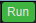

| Constellation Action | Keyboard Shortcut | User Action | Menu Icon |
|---|---|---|---|
| Open Analytic View | Ctrl + Shift + Z | Views -> Analytic View |
|
The Analytic View is a tool for computing analytics across a graph in a user-friendly manner. This is done by posing complex algorithms as simple questions you might ask of the graph. These algorithms range in functionality from scoring based on the structure of a graph, to clustering and partitioning the graph, and even analysing content stored on a graph.
There are a couple of ways you can define a question you want to answer for your graph. The first option is to choose a pre-defined question from the "Questions" list. The "Analytics" list will be populated with the analytics specified by that question. The alternative option is to define your own custom question by selecting a category under the "Categories" list, and then selecting any number of analytics found the "Analytics" list.
For each of the analytics selected, parameters can be viewed in the pane at the bottom of the Analytic View. For a pre-defined question these parameter values are pre-defined and can't be edited but are configurable if constructing a custom-made question. You can also view help pages for selected analytics here by clicking on the "Documentation" tab.
Once you have finished configuring your question, you can run it by pressing the  button.
Once a question has finished running, the results are compiled into a table which is displayed at the top of the view. You can also visualise these results on the graph with options to add colour, size, and show/hide filters.